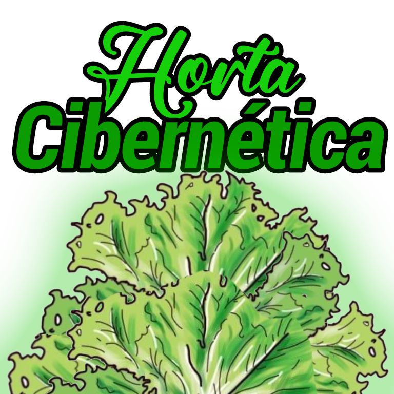

Escola
Professores
CEMAG - HORTA
SOBRE A ESCOLA CEMAG
Algumas curiosidades interessantes sobre a nossa escola...
CEMAG (Colégio Estadual Manoel Antonio Gomes) é uma escola situada na cidade de Reserva. É a escola com melhor qualidade de ensino em nosso município, onde é dirigida por Junior Vaz.